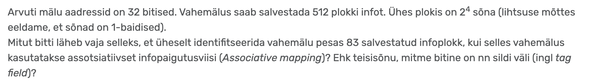

Vihjetega ülesanne
Vihje 1
Assotsiatiivne paigutusviis tähendab, et nüüd ei salvestata plokke mitte järjest, vaid suvalisse vabasse plokki.
Vihje 2
Mäluaadress jaguneb kolmeks osaks: silt (kontrollnumber ploki leidmiseks), indeks (millisesse plokki info paigutada), nihe.
Vihje 3
Assotsiatiivses paigutuses ei kasutata indeksvälja, sest asukoht määratakse suvaliselt, seega on selle pikkus 0 bitti.
Vihje 4
Kõigepealt tuleb leida nihke bittide arv. Selle annab logaritm alusel kaks ühe ploki pikkusest sõnades, kuid ühe ploki pikkus on meile juba mugavalt kahe astmena ette antud, seega saab selle kohe astendajast võtta.
Vihje 5
Sildi bitid arvutatakse viimasena. Mäluaadressi kogupikkusest bittides tuleb lahutada kõikide selle osade bittide arv peale sildi välja omade.
Kontrolli oma vastust
Palun anna meie veebilehele tagasisidet!
Veebilehe koostajad: Mia Grossthal, Sandra Karo

Palun pane meie Githubi projektile tärn! 💗